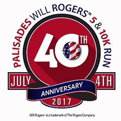
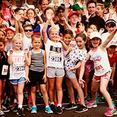
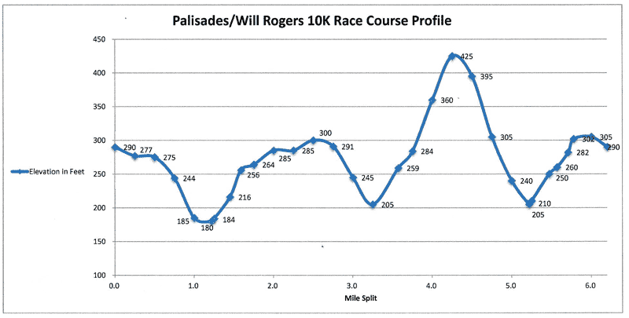
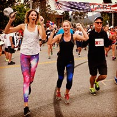
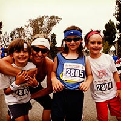

The Palisades Will Rogers™ 5 & 10K Run traverses the beautiful city streets of the Pacific Palisades, with the 10K runners proceeding through the Will Rogers™ State Park. This run is one of the more popular and well recognized 10ks in California.
Awards for the 5K & 10K give medals to first, second and third place finishers in 30 divisions (14 male and 14 female) in each race. The Kids' Fun Run is non-competitive and doesn't have age divisions with each participant receiving a ribbon and a flag.

The 5K, 10K, and Kids' Fun Run start and finish at the Palisades Recreation Center, 851 Alma Real Dr., Pacific Palisades. Day of race registration begins at 6:30 a.m. and ends at 8:00 a.m. We look forward to seeing you there this 4th of July at the starting line for a prompt 8:15 a.m. start / Kids Run at 9:30 a.m
Elevation map of the race:

Race Fact Sheet
Date: Tuesday, July 4, 2017
Where: The Palisades Recreation Center, 851 Alma Real Dr., Pacific Palisades.
Time: Day of race registration begins at 6:30 a.m. and ends at 8:00 a.m. 5K & 10K start at 8:15 a.m., Kid's Run at: 9:30 a.m.
5K Course is the first part of the 10K course, is relatively flat and goes through beautiful residential area of Pacific Palisades. Both 5K & 10K start and finish at Palisades Recreation Center.
10K Course follows same route, then proceeds on Sunset Boulevard up a steep one-mile climb through Will Rogers™ State Historic Park, then back down to Sunset Boulevard returning to the Recreation Center.
Kids' Fun Run is flat 1/2 mile course, starting and finishing at the Recreation Center.
Parking on race day is available on Temescal Canyon.

For more information please contact:
Brian W. Shea
PO Box 601
Pacific Palisades, CA 90272
admin@palisades10k.com

Race presented by the Palisades Will Rogers™ 5 & 10K Run Foundation
Special thanks to our title sponsor:
Saint John's Health Center.
